再看看我关心的几个股票，呵呵，还是坚强的按照自己的逻辑“走自己的路让别人无路可走”。
2015年1月7日，我按照自己对短线技术的理解，先卖出000767漳泽电力，并像2015年1月22日提醒底部7元以下买入600401海润光伏的粉丝先9.7元卖出一样，让买入漳泽电力的人先出局。事后很多粉丝回复，因为各种原因（上班无法看盘、侥幸心理等）被套其中，1月15日专门为这些粉丝写出《小尖顶是如何演变成老鸭头的？》帖子，现在的新粉最好去读一读，相信对你们技术、心理、时空转换这些的概念理解会有巨大的帮助。我讲过“根据我对技术的理解和经验，就没有见过这种“股价处于底部位置的小尖顶”会成为历史性头部。为了让他们知道漳泽电力的未来大概走势，写出《小尖顶是如何演变成老鸭头的》，在今天上午大盘暴跌的日子里，漳泽电力选择了一个特殊时刻对这篇帖子进行了完美诠释。
那么，是任何股票都可以完成《小尖顶是如何演变成老鸭头的》帖子里举例那种大牛股的演变吗？我现在明确而直白难道告诉你：不可能！
为什么呢？一切都在我的文章中给予了解答：只有鸡蛋才可以孵出小鸡，石头最终还是石头。
我知道大家的疑惑：什么股票是鸡蛋，什么股票是石头呢？今天这篇帖子就是兑现我昨天对所有粉丝的承诺：明天我将下大力气为你们写一篇《如何研读上市公司基本面最大的亮点》。
一、600120浙江东方：市场未来最大牛股之一是怎样研读出来的。
10分钟前在雪球网贴出这个标题的时间是2015年1月29日13:30时，股价22.3元。无论大盘牛熊，我们再过半年看看它的价格将会是多少？
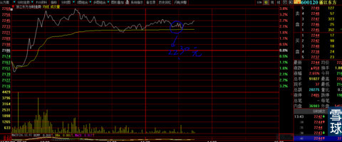
下图，是此时此刻”600120浙江东方“的日线图，让我们用半年时间去验证它未来会不会演变成2015年大牛股之一。
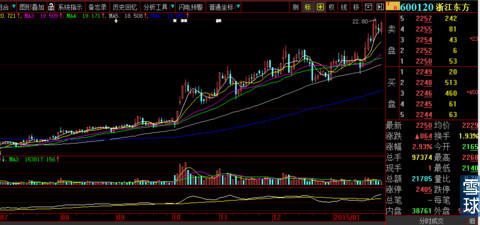
下图是我们从F10里面看到的第一幅基本资料状况。从中我们了解到了基本的信息，就像一个人：姓名、性别、年龄、职业、薪资状况、工作能力。
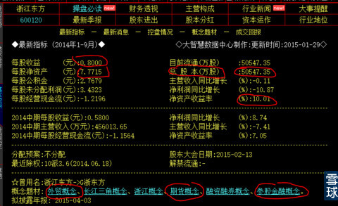
下图是浙江东方《经营情况表》摘要，我们会了解到：1、财务资料真实可靠（会计师无保留意见的审计结论，不要跟我争论也有会计师作假现象，那样争论就会无休止）；2、2012年—2013年—2014年9月连续盈利能力稳定可靠；3、家底厚实（每股净资产、公积金、未分配利润）；4、盈利总额够多（每股收益绝对额超过1元且连年增长）；5、绝非一些上市公司财报利润增幅10倍，每股收益却是0.3元以下的标题党。
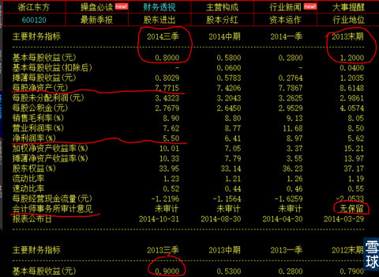
下图是浙江东方《资产负债表》摘要，我们会看到如下重要财务状况：1、存货数额稳定，没有大量积压；2、银行短期借款没有变化，经营所需资金保障有力，负债率占总资产比例较低；3、货币资金正常。
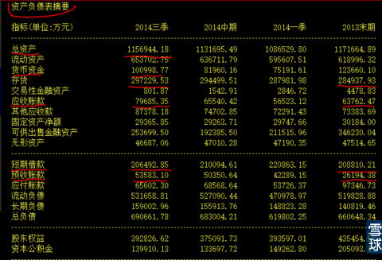
浙江东方还有两个最大的亮点，我相信身在其中的无论是大资金还是持有它的人，基本上全部都知道。1、持有多年行业内无论是规模、业绩、牌照门槛，还是当年持有”永安期货“的比例、成本，都是那么的有潜力。特别是公告的那么清楚：早在2012年10月永安期货成为国内首家股份制期货公司，并接受券商上市辅导。我们知道，一般辅导期3年左右，像永安期货这样的行业龙头，最终成功IPO上市的概率到底有多大，不需要我过多的解释，绝非地方民营创业企业遥遥无期。大家可以计算一下，当前一个小券商股票的总市值就超过了宁波银行+北京银行+3家银行的总市值，未来永安期货上市的时候，永安期货第二大股东“浙江东方”间接市值会有多少？2、公司持股49%的浙江国贸东方投资管理公司与中科大量子通信技术团队达成意向，成立“浙江神州东方量子网络科技有限公司”。并且说明“主要从事浙江省内量子保密通信固网建设和运营业务”，其中的“浙江省内、保密通信、固网、运营”都是关键词，大家自己去一个词一个词的细细揣摩推演。这个团队的科学家是我们国家最年轻的科学院院士：潘建伟。不知道“量子通信”为何物以及潘建伟是何人的粉丝，可以再去读一遍我转帖的文章《朱清时院士：不可思议的量子意识》。至于“浙江东方”内含的“量子通信”这个因子到底是鸡蛋还是石头，一定是仁者见仁智者见智，毕竟我们都不是物理科学家。我只记得“600770综艺股份”从我刚进入股市的1997年开始，它就反复被市场以“8848网站”、再后来的“高温超导”作为最靓丽的题材把股价不知道反复翻10倍的炒作过多少次，直到今天还在喋喋不休的拿它“高温超导”、“薄膜太阳能”说事，业绩却多年如一日的保持“很低调”。
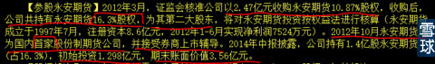
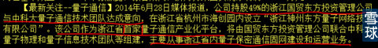
尽管上述资料都是公开的，也就是我经常说的：股市尽管也是赌场，但它与澳门赌场最大区别在于大家打的是明牌，在这一点上无论是机构还是个人是站在同一起跑线上。至于很多人会说：我们个人哪里会有这样的机会了解这么多信息与分析、鉴别这些信息的能力？我的回答是：那就爱莫能助了，就像一天都没有受过训练的新兵，要死要活的闹着上战场与人拼刺刀找死，任谁也拦不住。
浙江东方是我2014年9月初来雪球时挑出的第一批自选股之一，当时的股价处于12—13元之间波动。2014年10月9日这天，浙江东方发出“约3.88亿元债权出现逾期”的警示性公告，也就是说，浙江东方借给生意合作伙伴“索日集团”3.88亿元按照约定时间没有按时收回。这个公告最值得注意的看点与关键词是“索日集团“暂”无法进行清偿，借款之前，索日集团控股股东及相关控股子公司为上述全部债权提供连带责任担保以及评估值约2亿元的股权质押担保”。也就是说，最坏的结果就是会有1.88亿元的或有坏账损失。这个损失是“或有”损失以及有1.88亿元天花板上限的。见下图公告。
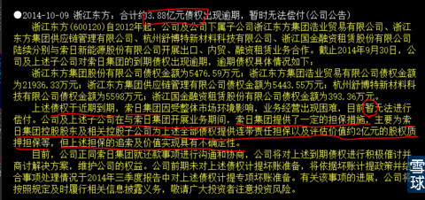
2014年10月9日，浙江东方上图公告一出，股价跳空低开，稍许反弹后被泼水一样汹涌而出的恐慌筹码用2个小时从上日收盘价13.39元打低到-7.2%的12.48元，当天收盘价为12.8元并放出自2013年8月—2014年10月长达14个月以来的3409.86万股阴线天量。每股下跌最大价格0.91元，对应50547.35万股总股本市值蒸发损失4.6亿元，远远超过最坏可能债权损失1.88亿元，这就是信息对市场影响的“蝴蝶效应”，也就是“牛鞭效应”的波动率真实表现。所有参与其中又在这天退出的人不值得任何同情，他们在后来的懊悔中为什么不问问自己，1、我当初为什么买它？它的市场价格被高估了吗？2、日后的上涨与我的看法相反我为什么不更正自己的错误？3、就算你自己原谅自己：每个人都会有“恐惧”。那么你明明知道自己不是那块料为什么还要押上全部身家与“泰森”签下生死拳击合约？
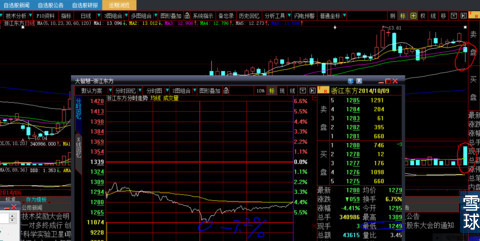
2014年10月10日浙江东方连一刻钟思考时间也不给昨天下车的人一口气直接触及涨停，20分钟内再把打开的涨停缺口牢牢封在涨停板上。见下图。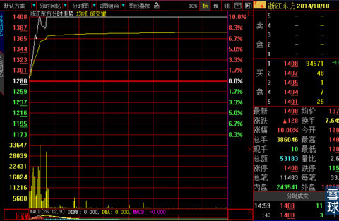
下图是2014年10月10日后几天浙江东方日线图
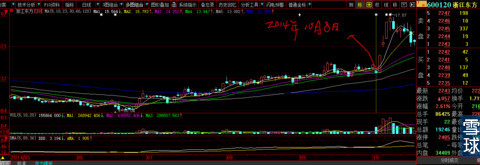
4个月后的今天收盘价21.96元，暂时的涨幅为71.5%。见下图
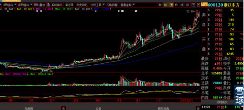
至于未来浙江东方到底会怎样走，这个问题只能交给市场与时间去诠释。
二、002440闰土股份、600352浙江龙盛市场未来最大牛股之二是怎样研读出来的
本帖开篇就说了，我只是就一个范例教大家怎样去研读最基本的也是最公开的个股F10资料，并如何快速关注哪些关键指标与关键词，以及用“不怕不识货就怕货比货”大妈买菜都会的方法，对比市场当下的交易价格是相对过高还是过低？关于“002440闰土股份”我就不用再如同上述那样一项一项的去解读，有了上述的范例，粉丝们照葫芦画瓢总是会的，不可能让我来教你们一辈子吧？我们只解剖两个信息样本来推演闰土股份股价的未来趋势。
1、下图是关于2014年2月闰土股份在当时属于“骇人听闻”“刑事”事件的处理结果，这是《人民网》江苏视窗的公开信息。看过下图它给我们两个信心：第一、无论当时是多么“骇人听闻”刑事事件，早在2014年2月就已经处理完毕，并且已经有了处罚结果：闰土股份灌云子公司被罚20万元；第二、未来股价运行过程中，你无论听到任何与之不符的小道消息或者突发私募、微信、微博之间传递放大的信息传闻，可以置之不理，再也不会重蹈上述类似“浙江东方”债权或有损失被主力血洗的覆辙。

2、下图是《中国证券网》2015年1月27日登载的《H酸价格大涨3万元 染料市场有望延续涨势》文章，现在讲讲我看到下图文章时得到的有效信息与关键词：
第一、H酸价格上涨幅度够猛，3万元/7万元=价格涨幅42.8%，用“暴涨”来形容一点都不为过；
第二、对“600352浙江龙盛”没有任何实质性利好或利空影响，它的H酸产能1万吨正好自产自用，H酸价格的上涨或者下降对浙江龙盛没有1分钱实际意义，因为H酸原材料上涨的利好因素已经完全反映到浙江龙盛染料产成品的销售价格中去了；
第三、对“楚源”公司没有任何意义，因为它工厂着火已经暂时停产，即使将来复产，H酸价格届时因为产能的恢复与释放必然会回落，因为“楚源”的产能对整个市场举足轻重；
第四、对002440闰土股份意义非凡。理由是：1、有2万吨产能处于停产状态，这个产能足以与最大的生产商“楚源”相匹敌；2、正因为闰土股份H酸处于停产状态，H酸价格的暴涨反过来会极大推动闰土股份及其所在地政府对停产状态尽快复产的动物本能，公司与当地政府会形成合力，复产时间会大大加快，闰土股份具有H酸的2万吨产能对于总股本只有浙江龙盛50%的闰土股份而言，属于重量级大利好；3、价格暴涨是产能恢复的最大动因与动能，随着包括“楚源”在内的全市场所有H酸产能的恢复，价格必然会回落到每吨7万元正常水平，但是对于H酸停产状态仍然保持优良业绩的闰土股份而言，只会是更加锦上添花。
第五、“整个行业基本无库存”，闰土股份+浙江龙盛的H酸新增产能释放，有了充分的市场“消化胃口”，企业做生意谁不希望即产即销0库存？
第六、下游开工率不足5成，前期的染料产品价格涨价不是“过去时”还有“将来时”；
第七、时间可期、近在眼前：春节后行业旺季一如既往，没有过多的不确定性；
第八、国家对染料行业“高门槛环保限制”，是为浙江龙盛+闰土股份未来业绩持续而稳定高增长保驾护航最坚强的钢铁战士。政府已经再三明令：今后不再批准新增染料厂商，只是尽力在原有高技术染料公司扩大产能。甘肃“明盛”环保事件，是习近平总书记在2014年9月亲自批复对破坏环保督导查处的典型案件，此案对全国类似问题所起的威慑力不可估量，甘肃省对当地政府主官的处罚力度也是空前的。这就是浙江龙盛+闰土股份最根本的也是最大的可持续利好，2014年9月的这个重大利好却被市场所有的瞎子们视而不见。就如同浙江龙盛仅仅2个月前股价还在14元的泥潭里苦苦挣扎而市场对之视而不见的漠然心态一样。
第九、什么叫”持续而稳定的高增长“？翻译过来的意思就是：从今以后，浙江龙盛+闰土股份就不再是”周期性“行业，不再像铁矿石、煤炭、钢铁、房地产等等周期性业绩起伏巨大的行业。这种有着巨大而宽泛护城河的标的公司，是大资金梦寐以求恨不能在它被市场低估时期打完所有子弹的标的公司，浙江龙盛+闰土股份与当年一大批从低价股长年累月不断上涨、除权、再上涨的百元股“云南白药、同仁堂、贵州茅台”等等相比毫不逊色。也会像它们当年那样在所有不理解、不信任的质疑中孤傲的走自己的股价上涨之路，让下车的人无路可走。
第十、这么好的股票标的为什么会下跌？你问我，我问谁？就如同当年身在“云南白药、贵州茅台”之中半道下车的人一样，我怎么知道他们是怎么想的？其中当然包括几乎囊括了全球顶级商科学院毕业的大型专业基金经理人。
你现在随便拉出一个冲进股市的新手菜鸟问他，你看看有几个不是最低也是“专科大学”文凭？再看看他们提出的幼稚到到让农村种地的老农都哭笑不得的问题：明天股价会怎样？这么好的股票为什么今天会下跌？连种子下地到成果收获最起码需要一个季节的基本道理都不懂，还有脸问东问西？
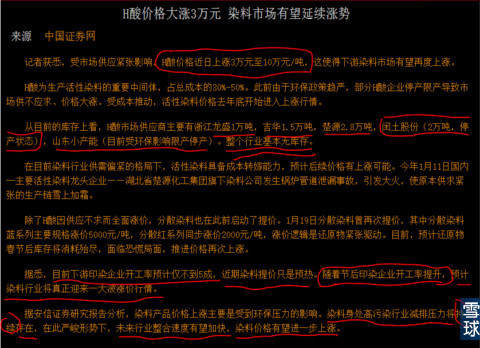
有人问我：“心大”你是否少分析了一方面，就是染料市场的空间是有限的，浙江龙盛和闰土股份在15年即使能达到100%业绩增幅，但是涨价肯定有个尽头，如果市场需求不增加，16年,17年肯定不......。
我的回答是：我倒想问问你，云南白药、片仔癀、茅台的市场是不是有局限？你再这样去问2005年手持云南白药、片仔癀、贵州茅台的人，看看他们会怎么回答你？因为我实在不知道怎么回答你。
综上所述：闰土股份年产2万吨H酸产能回复生产公告公布之时，就是股价火上浇油暴涨之日。
三、300207欣旺达。
四、600310桂东电力
五、300317珈伟股份
六、600112天成控股
七、
八、
这样方式一个一个股票写下去，也太累了。先休息一下再说。
今天的上海特别冷只有3度，抽了几只烟必须开窗户，瑟瑟发抖中严重影响写作速度。
由于是边写边保存，且希望不能敷衍了事、虎头蛇尾，写成有对您有切实帮助的高质量帖子，请耐心等候，待续。
静冬@炒的是心:同样是庄股，“新黄浦”的K线看起来很大气，很舒服，“000525红太阳”则看起来皱皱巴巴的，这是怎么回事？
炒的是心@静冬: 所以我有句名言“股价在底部区域的时候是最折磨人的，主升浪都是在相对高位才开始展开”。不过话又说会来，如果你不是买在低位，等股价到了相对高位时，有几个散户不被最后几天震仓时刻”分时图早盘快速直线拉高，然后一层层放量对倒，宽幅的过山车式下跌“所吓倒而退出的？不然的话，这个市场就是大资金庄家全部死光散户个个富甲四方了？哈哈哈哈哈哈
愚公俞@炒的是心:心大，有一事不明 根据您设置的参数002447一桥海参2015年1月13日，像DMA白线还没上穿黄线啊？
炒的是心@愚公俞: 你从小看女人到现在也有20几年了吧？姑娘长得好不好看，难道你会硬凑到她鼻子跟前才能看清楚她脸上有几个痘痘？
旗木卡卡西smd:@炒的是心:心大，对于高价和低价时，量价之间的关系可讲讲吗？不知道这个话题您看来可否有意义。
炒的是心@旗木卡卡西smd: 基本面研究结束以后，唯一的方法就是“不怕不识货就怕货比货”，买菜的大妈都比你强。
南宅@炒的是心:心大你选股的精华好多新股民不会领悟的其实你选股有许多共同性不知对不对。
炒的是心@南宅: 是的，最共性的是：1、基本面与股价相比，是低估的；2、在信息里不易察觉到大资金已经进入，但是技术上已经明显有资金开始进场一段时间了；3、现在没有大资金进入，但是基本面和价格的对应关系，决定了大资金今后必然会进入。
锋刃-chen:@炒的是心:晕 ，刚发现“002447一桥海参”停牌了，看着不错但是就没入。心大真是神了
炒的是心@锋刃-chen: “002447一桥海参”我是2015年1月13日根据我的DMA最明确指示翻盘看到的，研究它基本面加上百度它与各种同类型股票的专业数据对比和亮点的差异，最少也花了2个小时才放心加入我的雪球网自选组合。我刚加进雪球自选的当天就有人讥讽：“跑了一个獐子岛的扇贝，有来了一个海参”。我给他的回复是：“我疯了呗”！